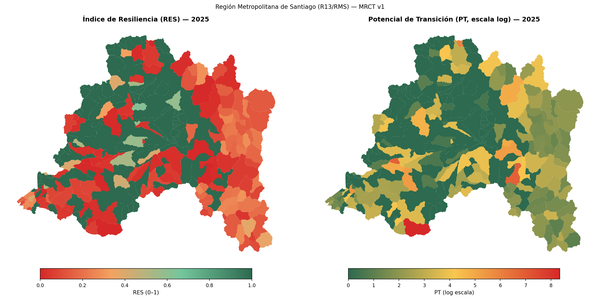
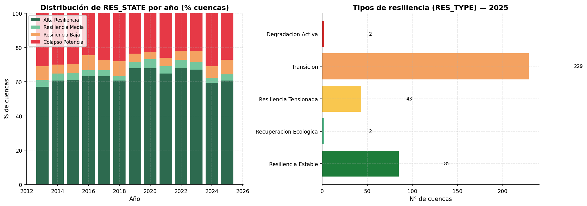
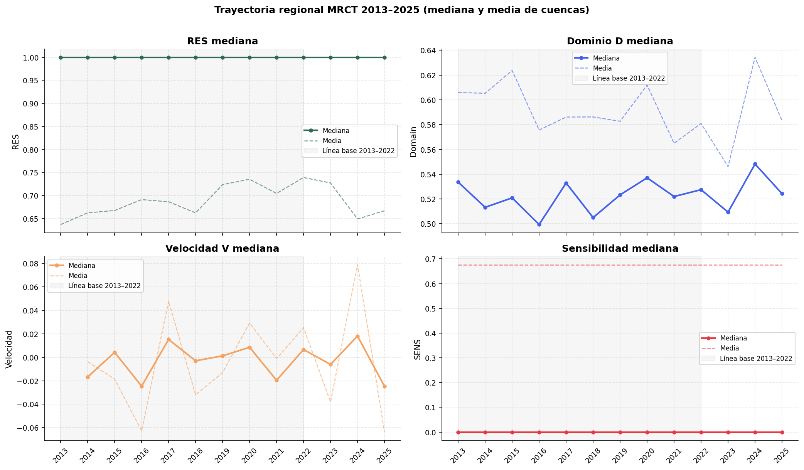
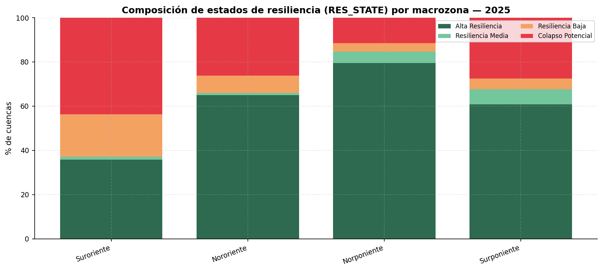
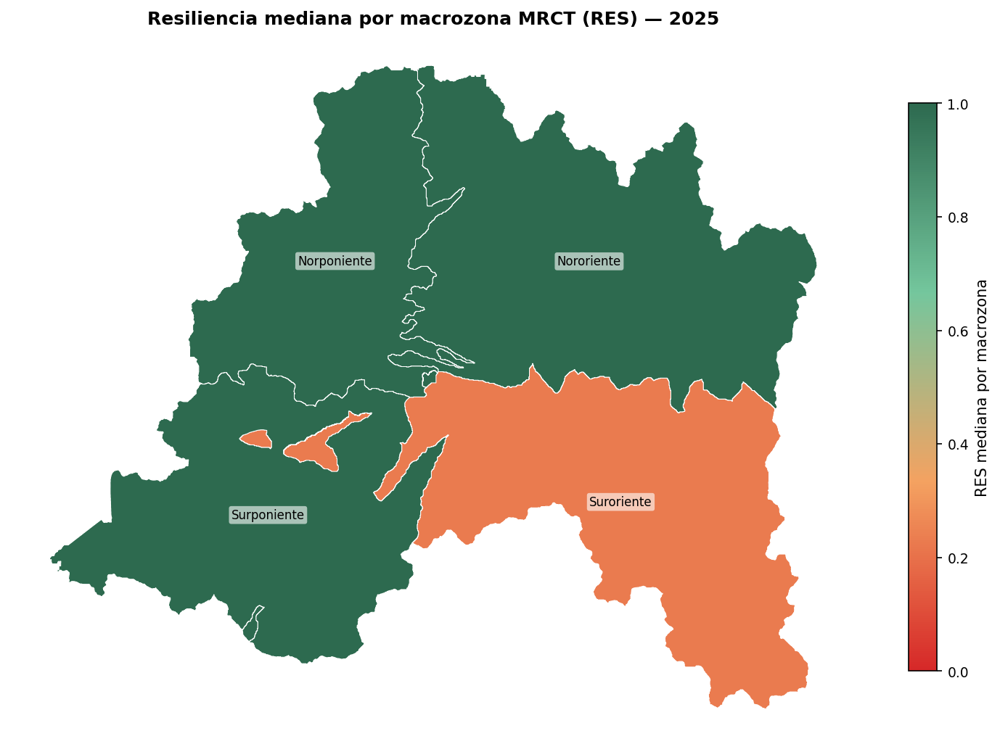
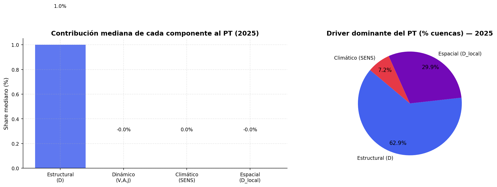
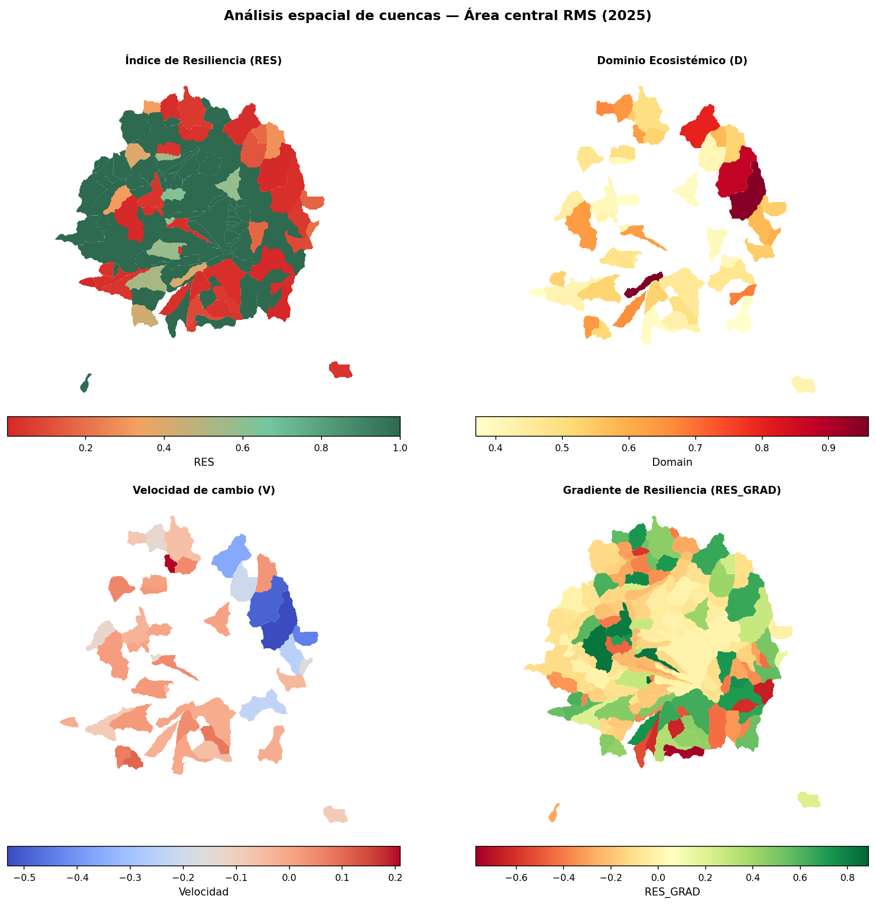
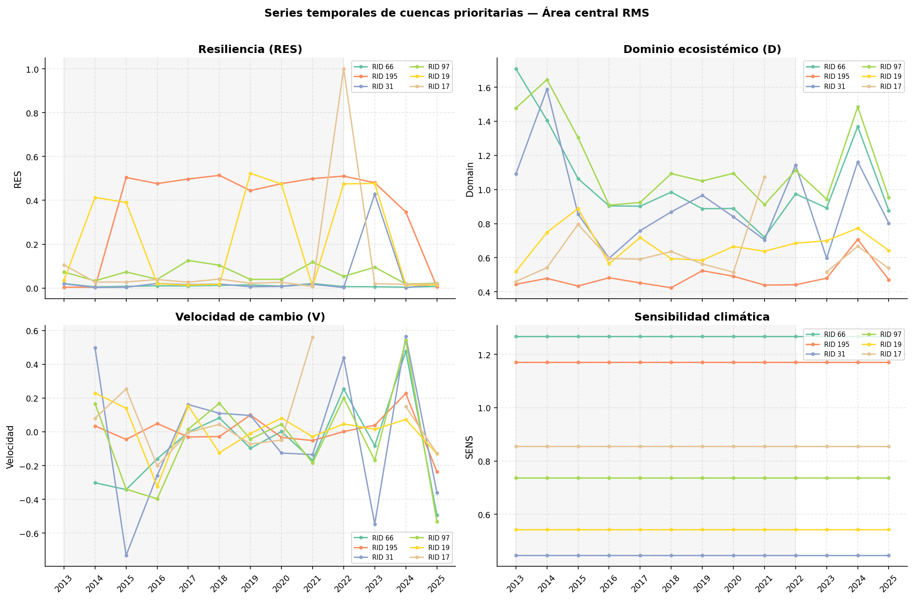
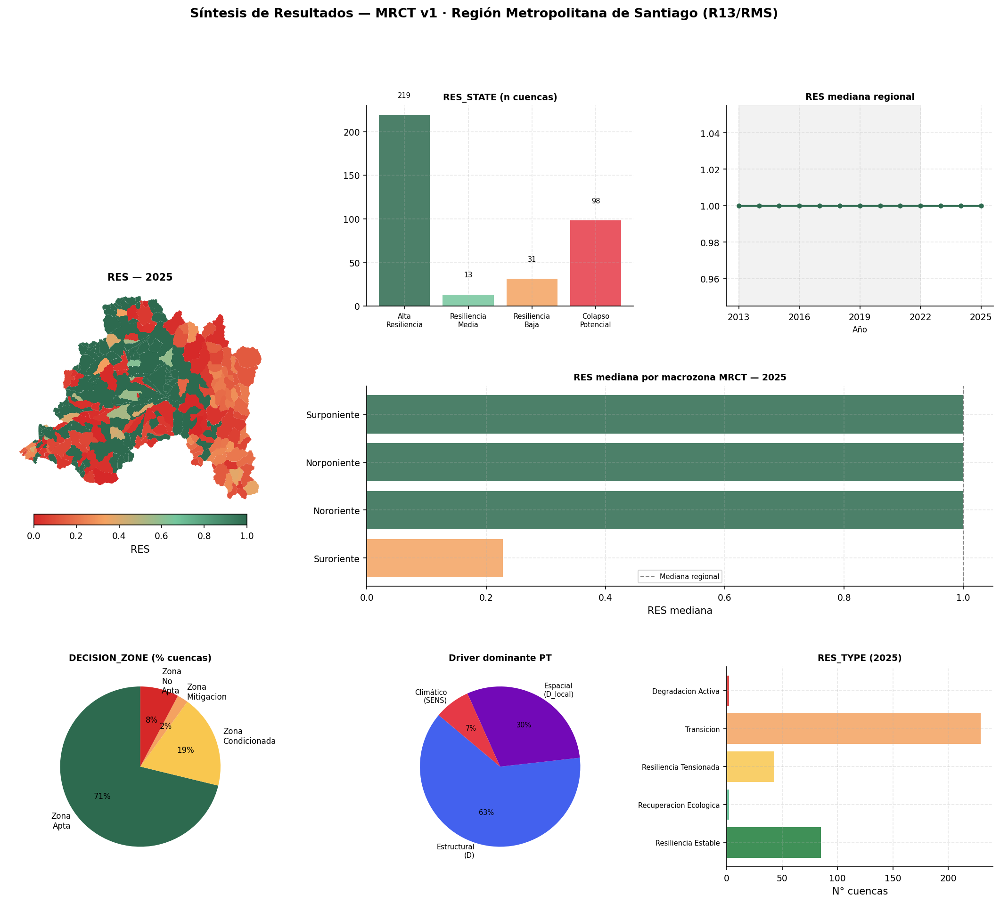

10 Análisis de Resultados
Lectura territorial de la MRCT en la Región Metropolitana de Santiago
Este capítulo presenta los resultados de la Matriz de Resiliencia Climática Territorial para la Región Metropolitana de Santiago. La lectura se construye a partir del panel temporal consolidado, la capa de cuencas RMS y las salidas cartográficas generadas por el flujo de análisis MRCT_Analisis_Resultados.
La estructura sigue el flujo general del libro: primero se revisa la cobertura de datos, luego se describe el comportamiento regional, después se traduce la información a macrozonas MRCT, se descomponen los componentes que explican el resultado final y finalmente se realiza un doble clic sobre el área central metropolitana.
RES resume la resiliencia operativa en escala 0-1. Valores altos indican menor presión de transición; valores bajos indican mayor presión sistémica. Su interpretación debe volver siempre a los componentes que lo generan: distancia estructural D, velocidad V, sensibilidad climática SENS, dominio local D_{local} y Potencial de Transición PT.
10.1 Base de resultados y cobertura
El panel maestro contiene 4.693 registros, organizados como 361 cuencas observadas durante 13 años, entre 2013 y 2025. La capa espacial asociada contiene las mismas 361 cuencas y utiliza el sistema de referencia EPSG:32719. Para 2025, el análisis cubre toda la Región Metropolitana de Santiago a partir de una agregación territorial reproducible por macrozonas MRCT.
Los productos RMS disponibles no incluyen una codificación comunal dentro de los polígonos de cuenca. Por esta razón, la lectura territorial usa cuatro macrozonas derivadas de los centroides de las cuencas: Norponiente, Nororiente, Surponiente y Suroriente. Esta agregación es analítica y no reemplaza una división administrativa oficial.
La cobertura temporal por cuenca es completa: las 361 cuencas tienen registros para los 13 años del período. Sin embargo, no todas las variables derivadas tienen la misma disponibilidad en 2025, porque algunas dependen de diferencias temporales consecutivas, series válidas o cálculos espaciales que requieren datos suficientes.
| Grupo | Variable | Cobertura 2025 | Lectura |
|---|---|---|---|
| Indicadores base | VEG, IRV, NP, MPA, PATCH_DENSITY, LPI, CONNECTIVITY, HUM, PN, WA, IA, ALB, TB | 100,0% | Base descriptiva completa para la lectura regional. |
| Indicador con disponibilidad parcial | IEH | 39,3% | Debe interpretarse con cautela en comparaciones finas. |
| Dominio estructural | D | 39,3% | Disponible para 142 cuencas en 2025. |
| Contexto espacial | D_{local} | 34,6% | Disponible para 125 cuencas en 2025. |
| Trayectoria temporal | V | 36,6% | Disponible para 132 cuencas en 2025. |
| Trayectoria temporal | A | 30,7% | Disponible para 111 cuencas en 2025. |
| Trayectoria temporal | J | 28,8% | Disponible para 104 cuencas en 2025. |
| Síntesis MRCT | SENS, PT, RES, RES_TYPE, RES_STATE, RES_GRAD, DECISION_ZONE, TRI, ETEI |
100,0% | Base principal para comunicación y priorización. |
Esta diferencia de cobertura es relevante para la lectura de trayectoria. RES y PT están disponibles para toda la región en 2025, pero las derivadas V, A y J deben leerse sólo en las cuencas donde la serie temporal permite estimarlas.
10.2 Lectura regional 2025
En 2025, la Región Metropolitana muestra una distribución polarizada. La mediana regional de RES alcanza 1,000, mientras la media es 0,667. Esta diferencia indica que existe un conjunto mayoritario de cuencas con resiliencia alta o máxima, junto con un subconjunto crítico de cuencas con RES muy bajo.
| Indicador regional 2025 | Valor |
|---|---|
| Cuencas evaluadas | 361 |
Mediana regional de RES |
1,000 |
Media regional de RES |
0,667 |
| Mediana de PT | 0,000 |
| Media de PT | 24,352 |
Cuencas en Alta_Resiliencia |
60,7% |
Cuencas en Colapso_Potencial |
27,1% |
Cuencas en Transicion |
63,4% |
Cuencas en Degradacion_Activa |
0,6% |
Cuencas en Zona_No_Apta |
7,8% |
El Potencial de Transición presenta una distribución altamente asimétrica. La mediana regional es 0,000, pero el máximo alcanza 4.254,180. Por esta razón, los mapas y gráficos de PT usan escala logarítmica log1p(PT), mientras que las tablas reportan el valor original.

RES y PT para 2025 en la Región Metropolitana de Santiago. Elaboración propia.
La lectura espacial muestra que las cuencas críticas no forman un único bloque homogéneo. El contraste entre zonas de alta resiliencia, cuencas con presión de transición y sectores con bajo RES debe leerse junto con las tipologías dinámicas y el contexto espacial.

RES_STATE y composición de RES_TYPE en 2025.
Las cuencas con menor RES en 2025 se concentran principalmente en las macrozonas Surponiente, Suroriente y Nororiente. La tabla siguiente muestra los diez casos más extremos ordenados por menor resiliencia operativa.
| Ranking | RID | Macrozona MRCT | RES |
PT | RES_TYPE |
SENS | V |
|---|---|---|---|---|---|---|---|
| 1 | 330 | Surponiente | 0,000235 | 4.254,180 | Recuperacion_Ecologica | 1,172 | -0,006 |
| 2 | 202 | Suroriente | 0,001074 | 929,889 | Resiliencia_Estable | 2,360 | -0,016 |
| 3 | 6 | Nororiente | 0,002596 | 384,190 | Resiliencia_Tensionada | 4,395 | 0,042 |
| 4 | 247 | Surponiente | 0,004315 | 230,766 | Transicion | 2,240 | NA |
| 5 | 225 | Surponiente | 0,005008 | 198,666 | Degradacion_Activa | 0,955 | 0,369 |
| 6 | 195 | Suroriente | 0,005389 | 184,554 | Resiliencia_Estable | 1,171 | -0,236 |
| 7 | 204 | Surponiente | 0,007145 | 138,954 | Resiliencia_Tensionada | 2,105 | 0,137 |
| 8 | 66 | Nororiente | 0,007303 | 135,924 | Resiliencia_Estable | 1,267 | -0,492 |
| 9 | 158 | Suroriente | 0,007338 | 135,271 | Transicion | 0,000 | NA |
| 10 | 111 | Norponiente | 0,008835 | 112,188 | Resiliencia_Tensionada | 1,700 | 0,016 |
Estos casos no deben leerse sólo como “peores cuencas”. Algunos combinan baja resiliencia con señales de recuperación relativa; otros muestran tensión o degradación activa. La diferencia es importante porque una misma condición final puede originarse en trayectorias distintas.
10.3 Trayectoria regional 2013-2025
La serie regional muestra una trayectoria con resiliencia mediana alta durante todo el período reciente, pero con señales dinámicas localizadas. En 2025, la mediana de RES se mantiene en 1,000, mientras que la mediana de D es 0,524, la mediana de V es -0,025 y la mediana de J es -0,052 en las cuencas con datos disponibles.
| Indicador 2025 | Media | Mediana | Mínimo | P25 | P75 | Máximo |
|---|---|---|---|---|---|---|
RES |
0,667 | 1,000 | 0,000 | 0,172 | 1,000 | 1,000 |
| PT | 24,352 | 0,000 | 0,000 | 0,000 | 4,831 | 4.254,180 |
| D | 0,583 | 0,524 | 0,319 | 0,434 | 0,629 | 4,789 |
| V | -0,064 | -0,025 | -0,819 | -0,095 | 0,011 | 0,369 |
| A | -0,155 | -0,029 | -1,615 | -0,249 | 0,046 | 0,595 |
| J | -0,294 | -0,052 | -2,442 | -0,497 | 0,064 | 1,117 |
| SENS | 0,676 | 0,000 | 0,000 | 0,000 | 1,002 | 11,176 |

La estabilidad de la mediana regional no implica ausencia de riesgo. La media de RES, la dispersión interna y las cuencas de bajo valor muestran que el problema territorial está concentrado en subconjuntos específicos. Por eso la MRCT debe leerse con mapas, percentiles y tipologías dinámicas, no sólo con promedios regionales.
10.4 Comparación por macrozona MRCT
La agregación por macrozona permite traducir la lectura de cuencas a una escala territorial más comunicable. Esta agregación usa centroides y no límites administrativos, por lo que debe entenderse como una lectura analítica de resultados hidrográficos.
En 2025, la macrozona con menor mediana de RES es Suroriente, con mediana 0,23 y 43,59% de cuencas en Colapso_Potencial. Las otras tres macrozonas tienen mediana igual a 1,00, pero mantienen subconjuntos críticos internos.
| Macrozona MRCT | Cuencas | RES media |
RES mediana |
PT mediana | D mediana | V mediana | SENS mediana | Colapso_Potencial |
Alta_Resiliencia |
|---|---|---|---|---|---|---|---|---|---|
| Suroriente | 78 | 0,45 | 0,23 | 3,39 | 0,49 | -0,03 | 0,89 | 43,59% | 35,90% |
| Nororiente | 103 | 0,70 | 1,00 | 0,00 | 0,54 | -0,17 | 0,00 | 26,21% | 65,05% |
| Surponiente | 102 | 0,67 | 1,00 | 0,00 | 0,59 | 0,00 | 0,00 | 27,45% | 60,78% |
| Norponiente | 78 | 0,84 | 1,00 | 0,00 | 0,46 | 0,01 | 0,00 | 11,54% | 79,49% |


La tabla muestra dos patrones relevantes. Primero, Suroriente concentra la señal territorial más crítica por mediana de resiliencia y porcentaje de colapso potencial. Segundo, las macrozonas con mediana igual a 1,00 no están libres de cuencas críticas: Nororiente y Surponiente tienen más de una cuarta parte de sus cuencas en Colapso_Potencial.
10.5 Componentes explicativos
La interpretación de RES requiere abrir el resultado final. El PT combina distancia estructural, intensidad de trayectoria, sensibilidad climática y contexto espacial. En 2025, la distribución regional indica que no existe un único componente explicativo para todas las cuencas.

La lectura de componentes permite distinguir cuatro situaciones:
- cuencas con bajo
RESpor alejamiento estructural alto, donde D domina la señal; - cuencas con bajo
RESpor trayectoria activa, donde V amplifica el PT; - cuencas sensibles a forzantes climáticos, donde SENS aumenta la presión de transición;
- cuencas con contraste espacial fuerte, donde D_{local} o
RES_GRADmuestran una diferencia marcada frente al entorno.
La combinación de estos componentes evita una interpretación excesivamente simple. Dos cuencas pueden tener RES bajo, pero una estar en degradación activa, otra en recuperación ecológica y otra en transición sin velocidad disponible para el año más reciente. Por eso la priorización territorial debe considerar simultáneamente RES_STATE, RES_TYPE, D, V, SENS y D_{local}.
10.6 Doble clic sobre el área central metropolitana
El área central metropolitana concentra población, infraestructura, servicios regionales y gran parte de las decisiones territoriales de la Región Metropolitana. En la MRCT 2025, el subconjunto de 50 km alrededor del centro de Santiago incluye 193 cuencas, con una superficie total aproximada de 7.898,4 km² y 2.509 registros en el período 2013-2025.
La mediana del área central de RES es 1,000, superior a la media regional. Sin embargo, esta cifra esconde contrastes internos: 144 cuencas están en Alta_Resiliencia, mientras 35 cuencas aparecen en Colapso_Potencial. La zona central no debe leerse como un promedio homogéneo, sino como un territorio donde coexisten cuencas muy resilientes con focos críticos de baja resiliencia.
| Indicador área central RMS 2025 | Valor |
|---|---|
| Cuencas evaluadas | 193 |
| Superficie total aproximada | 7.898,4 km² |
RES media |
0,787 |
RES mediana |
1,000 |
Cuencas en Alta_Resiliencia |
144 |
Cuencas en Colapso_Potencial |
35 |
Cuencas en Resiliencia_Baja |
5 |
Cuencas en Resiliencia_Media |
9 |
Cuencas en Transicion |
150 |
Cuencas en Resiliencia_Estable |
25 |
Cuencas en Zona_Apta |
161 |
Cuencas en Zona_No_Apta |
8 |

RES, PT, velocidad y componentes explicativos en 2025.
El ranking interno de cuencas prioritarias del área central fue construido combinando PT, bajo RES y velocidad alta. La mayoría de los casos priorizados se ubica en Colapso_Potencial, pero difieren en zona de decisión, tipo de resiliencia y trayectoria.
| Prioridad | RID | RES |
PT | D | V | SENS | D_{local} | RES_TYPE |
Zona |
|---|---|---|---|---|---|---|---|---|---|
| 1 | 66 | 0,0073 | 135,9236 | 0,8769 | -0,4920 | 1,2673 | 89,6399 | Resiliencia_Estable | Zona_Mitigacion |
| 2 | 195 | 0,0054 | 184,5536 | 0,4710 | -0,2361 | 1,1708 | 290,0875 | Resiliencia_Estable | Zona_Mitigacion |
| 3 | 31 | 0,0174 | 56,6367 | 0,8026 | -0,3594 | 0,4459 | 69,8067 | Resiliencia_Estable | Zona_Condicionada |
| 4 | 97 | 0,0221 | 44,3444 | 0,9530 | -0,5317 | 0,7372 | 32,9756 | Resiliencia_Estable | Zona_Condicionada |
| 5 | 19 | 0,0145 | 67,9749 | 0,6430 | -0,1303 | 0,5427 | 119,2632 | Resiliencia_Estable | Zona_Condicionada |
| 6 | 17 | 0,0199 | 49,2043 | 0,5383 | -0,1281 | 0,8546 | 85,3675 | Resiliencia_Estable | Zona_Apta |
| 7 | 22 | 0,0260 | 37,4050 | 0,6311 | 0,2092 | 0,3829 | 68,8951 | Resiliencia_Tensionada | Zona_Apta |
| 8 | 117 | 0,0488 | 19,4872 | 0,5767 | -0,2517 | 1,5859 | 18,8782 | Resiliencia_Estable | Zona_Condicionada |
| 9 | 353 | 0,0175 | 56,1498 | 0,5308 | 0,0452 | 1,0852 | 95,0705 | Resiliencia_Tensionada | Zona_Condicionada |
| 10 | 90 | 0,1683 | 4,9412 | 0,5363 | -0,4417 | 1,7948 | 2,5731 | Resiliencia_Estable | Zona_Condicionada |

La tabla muestra que no todas las cuencas críticas tienen la misma trayectoria. Algunas están clasificadas como Resiliencia_Tensionada, con velocidad positiva y alejamiento del dominio. Otras aparecen como Resiliencia_Estable, con velocidad negativa, lo que sugiere recuperación relativa aunque mantengan baja resiliencia operativa. Este contraste es clave para validación territorial: la revisión no debe buscar sólo deterioro, sino también casos donde la matriz detecta recuperación o reversión.
10.7 Síntesis de hallazgos
Los resultados de 2025 permiten ordenar cinco hallazgos principales.
Primero, la región presenta una distribución polarizada. La mediana de RES es alta, pero un 27,1% de las cuencas aparece en Colapso_Potencial. Esto obliga a leer el territorio con percentiles, mapas y tipologías, no sólo con promedios.
Segundo, el PT es altamente asimétrico. La mediana regional es 0,000, pero un grupo pequeño de cuencas concentra valores extremos, por lo que la escala logarítmica es necesaria para visualización y las decisiones deben revisar los valores originales.
Tercero, la comparación por macrozona distingue una señal crítica clara en Suroriente, que combina menor mediana de resiliencia y mayor proporción relativa de colapso potencial. Nororiente y Surponiente también requieren atención porque, pese a tener mediana alta, contienen subconjuntos críticos.
Cuarto, el área central RMS requiere una lectura interna. Su mediana de resiliencia es alta, pero 35 cuencas aparecen en Colapso_Potencial y 8 quedan en Zona_No_Apta. La selección de cuencas prioritarias muestra casos de baja resiliencia con distintas trayectorias y zonas de decisión.
Quinto, la MRCT funciona mejor como sistema de preguntas que como sentencia única. Los resultados permiten priorizar dónde mirar, qué cuencas revisar, qué trayectorias contrastar y qué hipótesis llevar a validación territorial.

10.8 Preguntas para validación territorial
A partir de estos resultados, se proponen cinco preguntas para trabajo posterior:
- ¿las cuencas en
Colapso_Potencialcoinciden con áreas de alta presión antrópica urbana, periurbana o cordillerana?; - ¿los años con mayor jerk corresponden a eventos climáticos, hidrológicos o de cobertura documentados en la Región Metropolitana?;
- ¿las cuencas prioritarias del área central RMS son urbanas, periurbanas o rurales, y qué tan factible es visitarlas?;
- ¿la sensibilidad climática SENS refleja gradientes regionales de aridez, albedo, nieve o temperatura de brillo?;
- ¿los gradientes de
RES_GRADidentifican discontinuidades espaciales que puedan validarse con observación territorial?
10.9 Notas metodológicas
La MRCT opera sobre cuencas hidrográficas, no sobre límites administrativos. En esta versión RMS, la agregación territorial usa macrozonas MRCT derivadas desde centroides de cuenca, debido a que los productos disponibles no incluyen CUT_COM. Esta división es reproducible, pero no debe interpretarse como equivalente a comunas, provincias o áreas funcionales oficiales.
El PT tiene una distribución muy asimétrica. Para visualizaciones se usa log1p(PT), pero las tablas mantienen los valores originales. Las cuencas con PT = 0 corresponden a casos donde D, V, SENS y D_{local} no amplifican presión de transición bajo la configuración del modelo.
La línea base del dominio corresponde al período 2013-2022. Los años 2023-2025 son años de evaluación posterior respecto de esa referencia. Un aumento de D indica alejamiento del régimen de referencia, pero no prueba por sí solo causalidad ecológica.